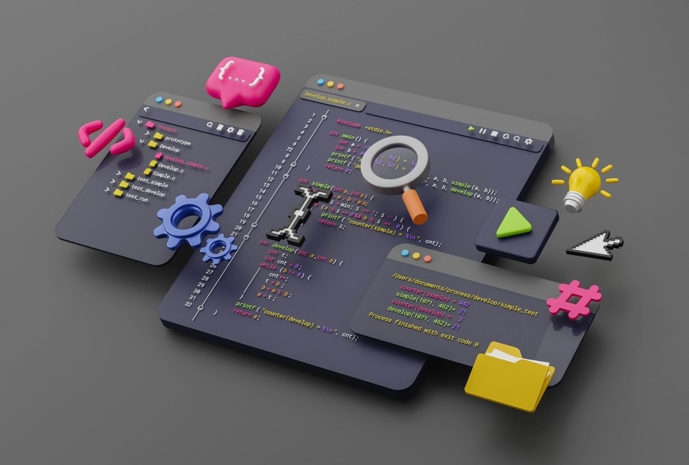

Como o próprio nome sugere, vem da ideia daquilo que tem por trás de uma aplicação. O Back-End trabalha em boa parte dos casos fazendo a ponte entre os dados que vem do navegador rumo ao banco de dados e vice-versa, sempre aplicando as devidas regras de negócio, validações e garantias num ambiente restrito ao usuário final (ou seja, onde ele não consegue acessar ou manipular algo).
Desenvolvedores backend focam principalmente em como o website funciona. Eles escrevem códigos focados na funcionalidade e na lógica que faz o
aplicativo web que eles trabalham funcionar, e a tecnologia que eles utilizam nunca é vista pelos usuários que acessam a aplicação web.
As tecnologias backend são uma combinação de servidores, aplicações e banco de dados.
As responsabilidades de um desenvolvedor backend podem envolver no desenvolvimento de APIs, escrever códigos para interagirem com o banco de dados,
criar bibliotecas, trabalhar em processos dos negócios, estrutura de dados e muito mais. No que o desenvolvedor backend vai trabalhar dependem do
cargo que ele vai preencher e a empresa.

A programação em backend pode tanto orientada a objetos/object-oriented (OOP) ou funcional.
OOP é a técnica que foca na criação de objetos. Com a programação orientada a objetos, os códigos precisam ser executados de uma forma em particular. Linguagens OOP populares são Java, .NET e Python.
Programação back end funcional é uma técnica mais focada na “ação”. A programação funcional utiliza a linguagem declarativa, isso significa que os statements podem ser executados de qualquer ordem.
É comumente utilizado no data science e em linguagens populares como SQL, F# e R.
As linguagens back end podem ser escritas tanto de forma estática ou dinâmica. O primeiro é mais rígido, mas melhor para encontrar erros, onde que o último é mais flexível, mas permite com que as variáveis mudem os tipos (no qual pode contar com erros inesperados).